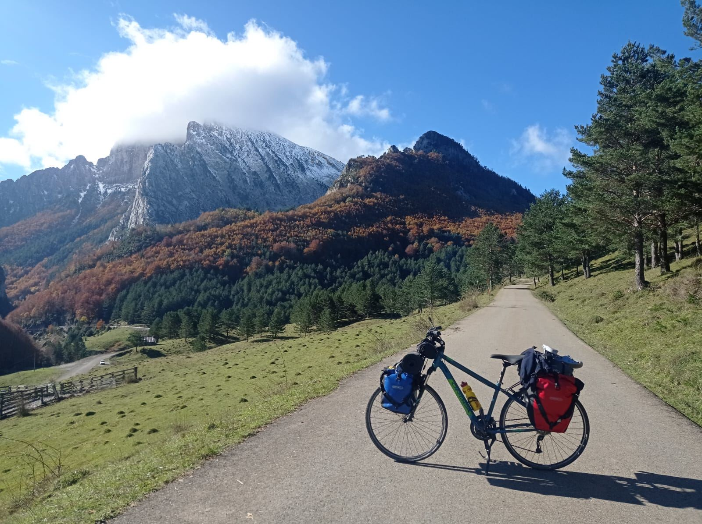
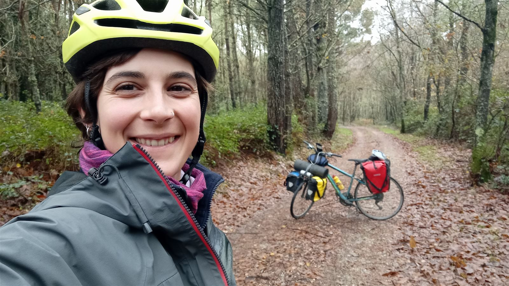
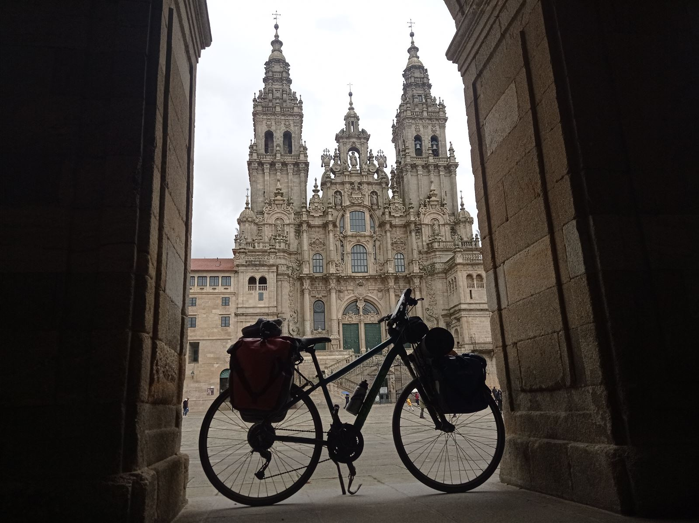

Desafío Norte: un viaje en bici de Cap de Creus a Finisterre
1.737 km y 26.168 m+ en solitario por una causa solidaria. Por Sandra Cuello.

Me había tenido que bajar de la bici y empujarla de lo fuerte que era la subida, estaba lloviendo, se me había terminado el agua y a la batería del móvil le quedaba poco. El mapa me dice que tengo que seguir recto, es el camino más directo para llegar a mi destino, pero en la realidad hay una valla bastante alta con un cartel: “Propiedad privada, prohibido pasar.” ¿Y ahora qué se supone que tengo que hacer…?
Os podéis imaginar la de cosas que me han pasado en este viaje en bici de más de mes y medio, cruzando los Pirineos desde el Mediterráneo hasta Irún, y después enlazando con el Camino de Santiago del Norte hasta Finisterre pasando por Santiago de Compostela.
34 días pedaleando, más de 150 horas encima de la bici, con una meteorología bastante complicada, arrastrando más de 40 kg, en solitario, mientras conseguía recaudar más de 5.400 € para escolarizar a 30 niños en Kenia… ¡Dan para mucho y no se puede traducir en otra cosa que en aventuras!
¿Por qué meterse en estos berenjenales?
Ahora te estarás preguntando: ¿pero qué tiene esta chavala en la cabeza para meterse en esto, pudiendo estar tranquilamente tirada en el sofá durante sus vacaciones? Es una muy buena pregunta. Yo también me la he hecho muchas veces.
Es algo que sale muy de dentro, que siento muy profundamente que tengo que hacer, y lo acabo haciendo aunque pasen años de la idea a llevarlo a cabo. Estos retos me hacen sentir viva, vibrar, hacen que todo tenga sentido. Es retar mis propios límites, físicos pero sobre todo mentales.
Llevaba muchos años con esta idea en la cabeza. “Algún día lo haré yo también”, pensé. Y la apunté en una lista que tengo en el escritorio del ordenador titulada “Las cosas que haré antes de morir”. Allí se quedó durante cinco o seis años. Nunca era el momento perfecto, y supongo que este año tampoco, pero simplemente lo hice: puse fecha para empezar y ya no habría vuelta atrás.


Una causa solidaria
Por la reacción de las personas a las que se lo contaba, no sé si mi viaje se consideraba tan normal para los demás… Así que decidí darle un sentido a la visibilidad que iba a generar. Así surgió la idea de colaborar con Idea Libre, el proyecto de María y Sandra en Kenia: están montando colegios, hospitales y cambiando la vida de cientos de personas.
Serían donativos de 3 €/km: si el viaje eran 1.700 km, el objetivo era recaudar al menos 5.100 € para escolarizar a 30 niños en Chumvi, uno de los pueblos donde trabajan. Gracias a la difusión en redes, llegamos a los 5.463 €.
Estar cumpliendo un sueño deportivo y a la vez saber que estás ayudando a cambiar la vida de estos niños. Un reto emocionante por partida doble.
Ruta, material y logística
Empecé estudiando el libro más famoso sobre cruzar los Pirineos en bici de montaña, pero me di cuenta de que no era una opción para mí. Así que diseñé mi propia ruta con varias aplicaciones, por caminos más pisteros y carreteras secundarias. Algunos días seguía la etapa al pie de la letra; otros improvisaba según la meteorología, las fuerzas o dónde iba a dormir.
Fui con una bici mixta, medio de montaña y medio de carretera, muy cómoda para pasar tantas horas encima. Lo único que se sale de la norma: ruedas sin aire que no pueden pinchar (marca Tannus). No tuve que llevar recambios ni herramientas para pinchazos. Un gran descubrimiento.
He dormido en sitios muy diversos: en medio de un bosque con mi tienda, en un hotel de cinco estrellas, en la furgo de un amigo, en hostales cutres, albergues, campings y casas de familiares. A mitad de viaje tuve que volver a trabajar, por suerte 100 % online: muchas veces, al llegar cansada de pedalear, tocaba ponerse delante del ordenador.

Lo que aprendí
La parte más interesante del viaje fue la gestión emocional de vivir a merced de los imprevistos. Creo que el éxito en este tipo de retos, como en cualquier otro de la vida, depende de tener muy claras varias cosas:
- Un objetivo claro y estar 200 % comprometida con él. Y tener un plan B, C, D… por si falla el A.
- Motivación intrínseca. Si lo haces por aparentar o por obligación, hay muchas posibilidades de que no salga bien.
- Adaptarte a cada momento. ¿Que hay una subida? Se sube. ¿Que llueve? Toca mojarse.
- Responsabilidad al decidir, sobre todo en solitario. A veces lo harás bien, otras regular y otras mal. También es parte del aprendizaje.
Un buen amigo me preguntó un día, cuando me quejaba de la lluvia: “Sandra, podrías haber cogido un avión y en unas horas estar en Santiago. ¿Cambiarías el viaje en bici por un vuelo?” En mi cabeza aparecieron todas las personas con las que me he reencontrado y abrazado, las historias de otros viajeros, los momentos de sufrimiento y superación, las duchas de agua caliente tras un largo día, la conexión con la naturaleza, los más de 5.400 € que van a cambiar vidas en Kenia, las lágrimas al llegar a Santiago y a Finisterre… ¿Cómo iba a cambiar eso por un avión?
No es llegar al objetivo en sí, es convertirte en la persona que tienes que ser para llevarlo a cabo y disfrutar del camino al máximo.

Gracias a todas las personas que han estado apoyándome, que han donado para Idea Libre, que me han acogido en sus casas, y sobre todo a María y Sandra por el trabajazo que están haciendo. Este reto ha sido un trabajo en equipo total. Yo solamente he pedaleado.
¿Y cuál será la próxima aventura en bici? La lista de “Las cosas que haré antes de morir” está llena de cositas interesantes. Lo que es 100 % seguro es que habrá más, y os lo seguiré contando por aquí.
No limites tus retos, reta tus límites.